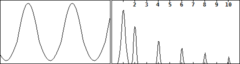

歪みと波形・倍音その8（各クリッピングと倍音）
2017年12月08日 カテゴリー：歪みと波形・倍音
Pure Data(Pd)を使って正弦波のクリッピングと倍音確認を行ったので、メモとしてまとめておきます。振幅は適宜調節しています。
＜対称ハードクリップ＞
奇数次倍音のみ出ています。
＜非対称ハードクリップ＞
偶数次倍音が加わっています。
＜対称ソフトクリップ＞
ハードクリップより全体的に倍音が減っています。
＜非対称ソフトクリップ＞
こちらも全体的に倍音が減っています。
＜半波整流＞
偶数次倍音のみ出ています。
＜全波整流＞
偶数次倍音のみ出ていて、基音がありません。オクターブファズでこの処理を行うことがあります。
クリッピングではありませんが、周波数2倍、振幅0.25倍の正弦波を元の正弦波に足した場合は下図のようになります。
真空管の歪みは単なる非対称クリップではなく、このような非対称な変形によるものといわれています。
半波整流した正弦波と元の正弦波を混ぜた場合は下図のようになります。

非対称に変形した波形になるので、これを利用すれば面白い歪みエフェクターが作れるかもしれません。
---以下2018年3月3日追記---
＜対称クロスオーバー歪み＞
奇数次倍音のみ出ています。
＜非対称クロスオーバー歪み＞
偶数次倍音が加わっています。